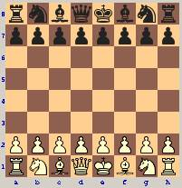

Chess Rules for Kids & Beginners
IchessU provides live online chess lessons for kids and for adults, with specialized chess courses from beginners to experienced advanced chess players. The chess lessons are available in groups and as private lessons. IchessU coaches have taught the game to thousands of children and adults all over the world, many of whom have gone on to win major tournaments.IchessU chess school is your best online resource to learn chess, improve your chess game or just have fun !
Schedule Evaluation Lesson at IchessU
Basic chess rules are essential if you want to learn chess. That’s why we are explaining these chess rules in an easy to understand way. From initial board set up to movement of every piece, we will explain everything in this chess rules section.
History of chess
Chess is believed to have been invented 1500 years ago in India. The game has changed only slightly since then with the advent of the queen in the 15th century and some minor movement adjustments in the 1800s.
Chess game goal
The ultimate aim in the chess game is delivering a checkmate – trapping your opponent´s king. The term checkmate is an alteration of the Persian phrase “Shah Mat”, meaning literally, “the King is ambushed”, and not “the King is dead”, that is a common misconception.
General Chess Rules
White is always first to move and players take turns alternately moving one piece at a time. Movement is required. If a player´s turn is to move, he is not in check but has no legal moves, this situation is called “Stalemate” and it ends the game in a draw. Each type of piece has its own method of movement. A piece may be moved to another position or may capture an opponent´s piece, replacing on its square (en passant being the only exception). With the exception of the knight, a piece may not move over or through any of the other pieces. When a king is threatened with capture (but can protect himself or escape), it´s called check. If a king is in check, then the player must make a move that eliminates the threat of capture and cannot leave the king in check. Checkmate happens when a king is placed in check and there is no legal move to escape. Checkmate ends the game and the side whose king was checkmated looses. Chess for kids would be a great option to help the kid enhance his thinking capability with the chess strategies involved. Visit our affiliate chess online lessons website for scheduling an evaluation session with one of our experienced chess coaches.
The initial position setup
The chessboard is made up of eight rows and eight columns for a total of 64 squares of alternating colors. Each square of the chessboard is identified with a unique pair of a letter and a number. The vertical files are labeled a through h, from White´s left (i.e. the queenside) to White´s right. Similarly, the horizontal ranks are numbered from 1 to 8, starting from the one nearest White´s side of the board. Each square of the board, then, is uniquely identified by its file letter and rank number. In the initial position setup, the light queen is positioned on a light square and the dark queen is situated on a dark square. The diagram below shows how the pieces should be initially situated.

Chess moves
- King can move exactly one square horizontally, vertically, or diagonally. At most once in every game, each king is allowed to make a special move, known as castling.
- Queen can move any number of vacant squares diagonally, horizontally, or vertically.
- Rook can move any number of vacant squares vertically or horizontally. It also is moved while castling.
- Bishop can move any number of vacant squares in any diagonal direction.
- Knight can move one square along any rank or file and then at an angle. The knight´s movement can also be viewed as an “L” or “7″ laid out at any horizontal or vertical angle.
- Pawns can move forward one square, if that square is unoccupied. If it has not yet moved, the pawn has the option of moving two squares forward provided both squares in front of the pawn are unoccupied. A pawn cannot move backward. Pawns are the only pieces that capture differently from how they move. They can capture an enemy piece on either of the two spaces adjacent to the space in front of them (i.e., the two squares diagonally in front of them) but cannot move to these spaces if they are vacant. The pawn is also involved in the two special moves en passant and promotion.
Castling
Castling is the only time in the chess game when more than one piece moves during a turn. This chess move has been invented in the 1500´s to help speeding up the game and improving balance of the offense and defense. During the castling, the king moves two squares towards the rook he intends to castle with, and the rook moves to the square through which the king passed. Castling is only permissible if all of the following conditions hold:
- Neither king nor rook involved in castling may have moved from the original position;
- There must be no pieces between the king and the rook;
The king may not currently be in check, nor may the king pass through or end up in a square that is under attack by an enemy piece (though the rook is permitted to be under attack and to pass over an attacked square)
En Passant
En Passant may only occur when a pawn is moved two squares on its initial movement. When this happens, the opposing player has the option to take the moved pawn “en passant” as if it had only moved one square. This option, though, only stays open for one move. The En Passant move was developed after pawns were allowed to move more than one square on their initial move. The idea behind this rule was to retain restrictions imposed by slow movement, while at the same time speeding up the game.
Pawn promotion
If a pawn reaches the opponent´s edge of the table, it will be promoted – the pawn may be converted to a queen, rook, bishop or knight, as the player desires. The choice is not limited to previously captured pieces. Thus its´ theoretically possible having up to nine queens or up to ten rooks, bishops, or knights if all pawns are promoted.
Free Trial Chess Lesson
Thanks for visiting our chess rules section. We offer online chess lessons given live by our experienced chess coaches to help you to learn to play chess. You would love your classes in our chess community.
| Ready to get setup for your first online chess lesson? | Take a chess quiz and meet our experienced chess coaches online for a free chess level evaluation |